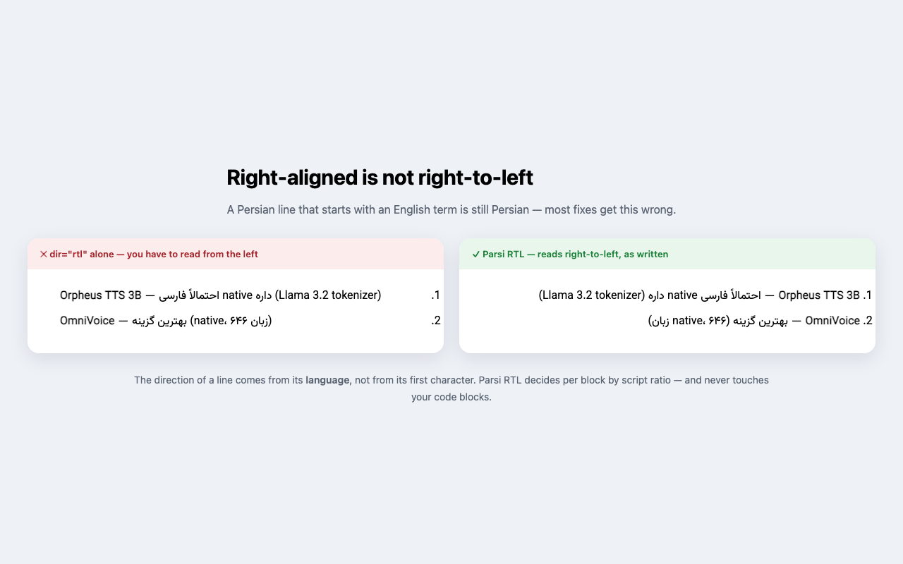
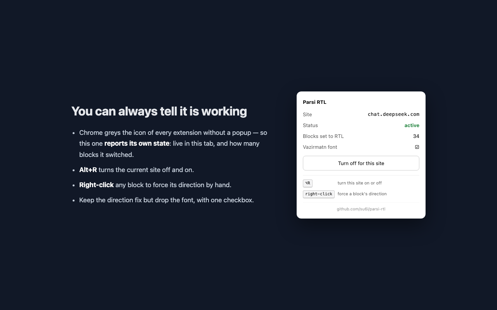

پارسی RTL
Parsi RTL
جهت و فونت صحیح برای زبانهای راستبهچپ در تمامی سایتها — تشخیص زبان بر اساس نسبت حروف نوشته، بدون تکیه بر اولین حرف.
Correct text direction and Persian font for RTL languages on any site — script-ratio detection, not first-strong guessing.


ویژگیها
Features
-
در هر سایتی: چتهای هوش مصنوعی، انجمنها، مستندات، وبمیل — در صفحاتی که متن راستبهچپ ندارند هیچ تغییری ایجاد نمیکند.Every site: AI chats, forums, docs, webmail — it no-ops where there is no RTL text
-
کدها چپبهراست میمانند: تگهای
pre،code،kbd،samp— شامل کدهای درونخطی مثلidentifierدر میان یک جمله راستبهچپ.Code stays LTR:pre,code,kbd,samp— including inline code inside an RTL sentence. -
بدون جمعآوری داده: بدون نیاز به شبکه، بدون ابزار تحلیلگر (analytics)، بدون نیاز به حساب کاربری.Nothing collected: no network requests, no analytics, no account